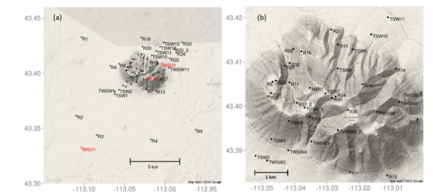
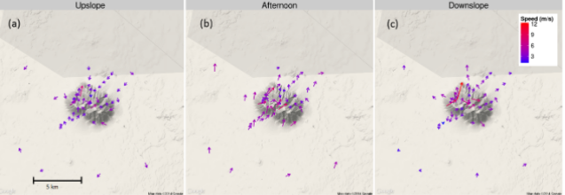
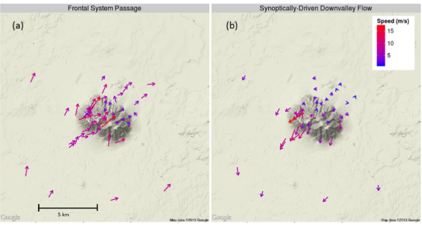

Big Southern Butte
Site Description
Big Southern Butte is a volcanic dome cinder cone approximately 4 km wide that rises 800 m above the upper Snake River Plain in southeastern Idaho. The dominant vegetation on the Upper Snake River Plain and Big Southern Butte is grass and sagebrush, although a few north-facing slopes on the butte have some isolated stands of conifers.
Setup

Sensor Layout at Big Southern Butte.
Observations
Diurnal Flow Regimes

Average flow regimes for Big Southern Butte during peroids of weak synoptic flow
Synoptically Driven Flow Regimes

Characteristic synoptically driven regime events
Conclusions
-
Surface winds on and around Big Southern Butte were completely decoupled from large-scale flows during upslope and downslope flow regimes, except for the highest-elevation ridge-top sensors.
-
Wind speeds increased with distance upslope during the upslope regime.
-
The highest speeds measured at Big Southern Butte occurred during the passage of frontal systems that generated strong southwesterly flows and during infrequent strong northwesterly flows presumably generated through SPCZ-like dynamics, thunderstorm outflows, or surface pressure gradients.
-
The findings from this work along with the additional archived data and available mesonet data at BSB should provide guidance for future development and evaluation of high-resolution wind models and integrated parameterizations, such as for simulating diurnal slope flows and non-neutral atmospheric stability effects.
Note
All data are archived and available to the public. Surface observations for each site are available as SQLite databases. Data from sodars, radar profilers, sonic anemometers, weather stations, and radiosondes are available in their raw formats. Access to these data along with tools to query,process, and visualize the data is described at https://collab.firelab.org/software/projects/wind-obs/repository. Descriptions of the NOAA mesonet data and contact information regarding mesonet data are found at http://www.noaa.inel.gov/projects/INLMet/INLMet.htm